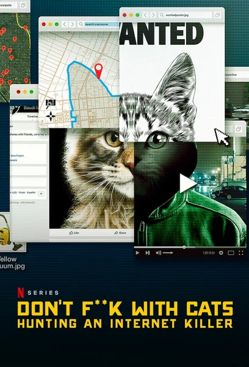

Руки прочь от котиков! Охота на интернет-убийцу
Don't F**k with Cats: Hunting an Internet Killer
2019
Документальный, Криминал
Всё началось с видео, в котором человек убивает котёнка: небольшая группа пользователей Facebook запускает сетевое расследование, находят его автора по мебели в кадре и геолокации — и предупреждают полицию, что следующим станет человек. Реальная история, где толпа интернет-детективов действительно опережает следствие — и где само это расследование подпитывает маньяка вниманием, в котором он нуждается. Документальный триллер о том, как интернет ищет справедливость — и чем это заканчивается.
Описание на английском
It started with a video of a man killing a kitten: a small group of Facebook users opens a web investigation, identifies the author from furniture in the frame and geolocation — and warns the police that a human will be next. A true story where a crowd of internet detectives really does outrun law enforcement — and where the manhunt itself feeds the killer the attention he craves. A documentary thriller about how the internet seeks justice — and how it ends.